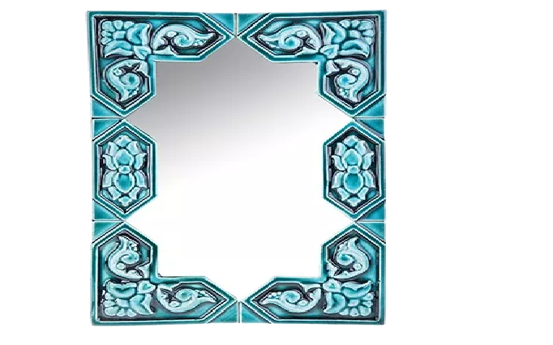
Ayehneh – mirror – symbol of the field of possibilities where the creative force reflects and makes everything possible
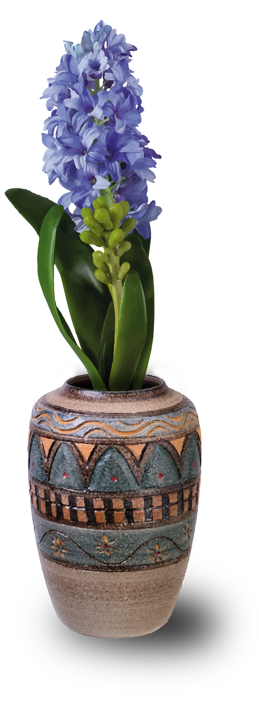
Sonbol – Hyacinth – symbol of the arrival of spring.
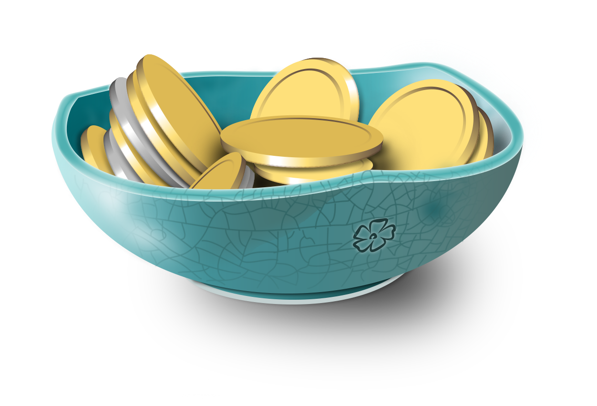
Sekkeh – coins – symbol of prosperity and wealth.
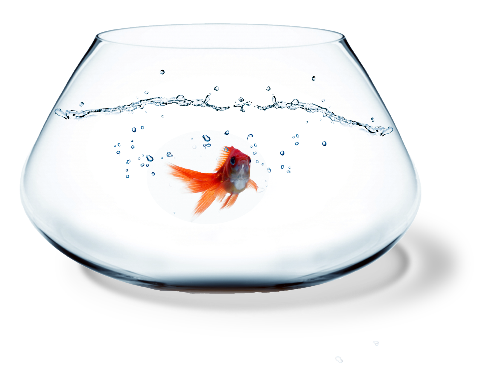
Mahi – fish – symbolizes life.
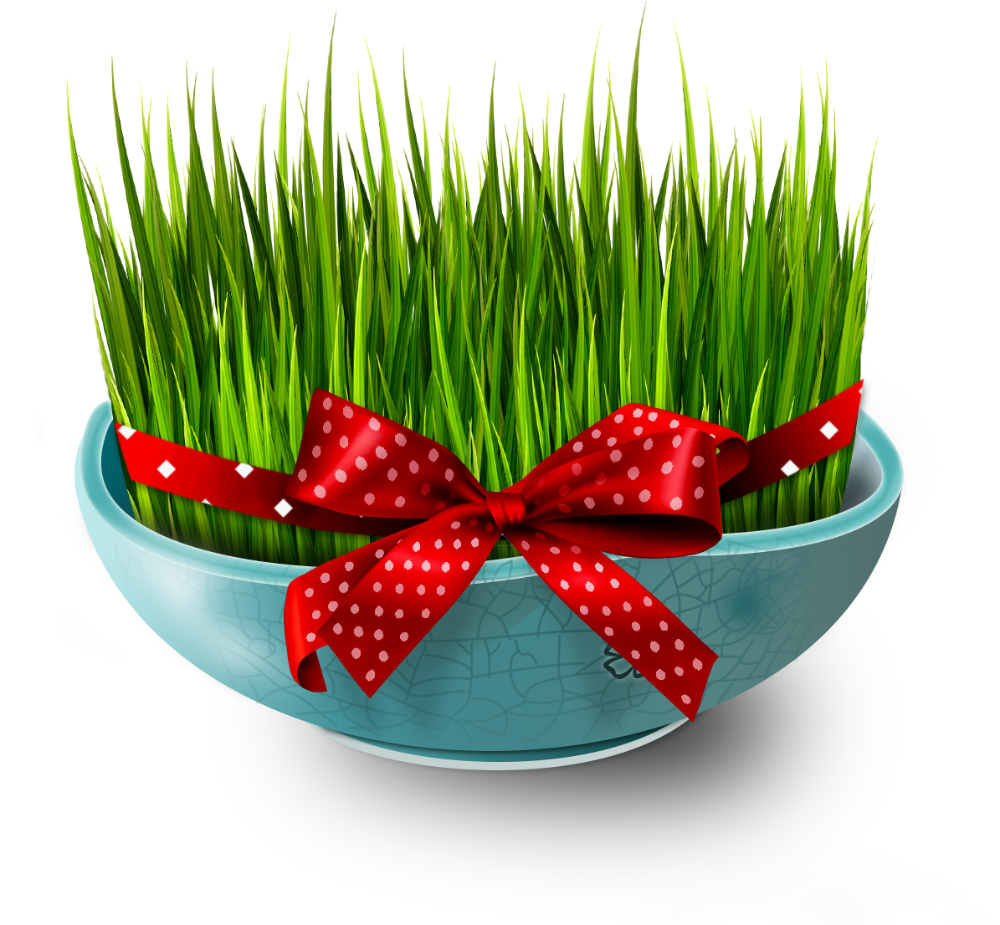
Sabzeh – wheat germ or lens growing in a dish – symbol of rebirth.
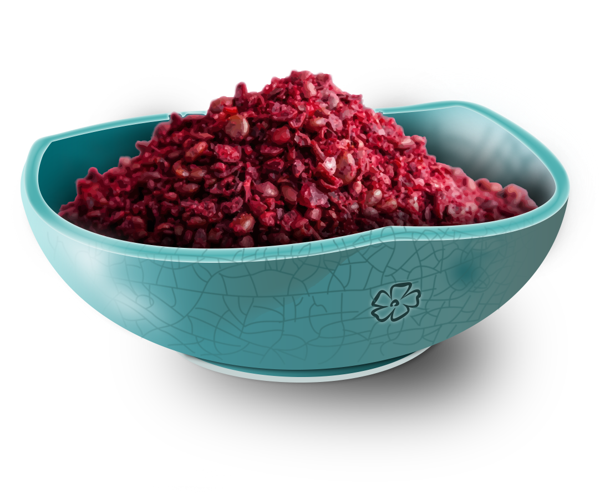
Somâq – sumac berries – the symbol of the color of sunrise and healthy
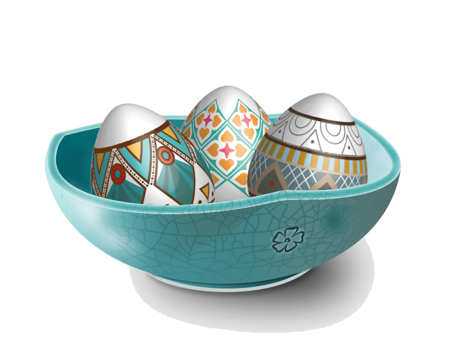
Tokhmeh morgh – egg – decorated with designs – symbol of the animal kingdom and of fertility
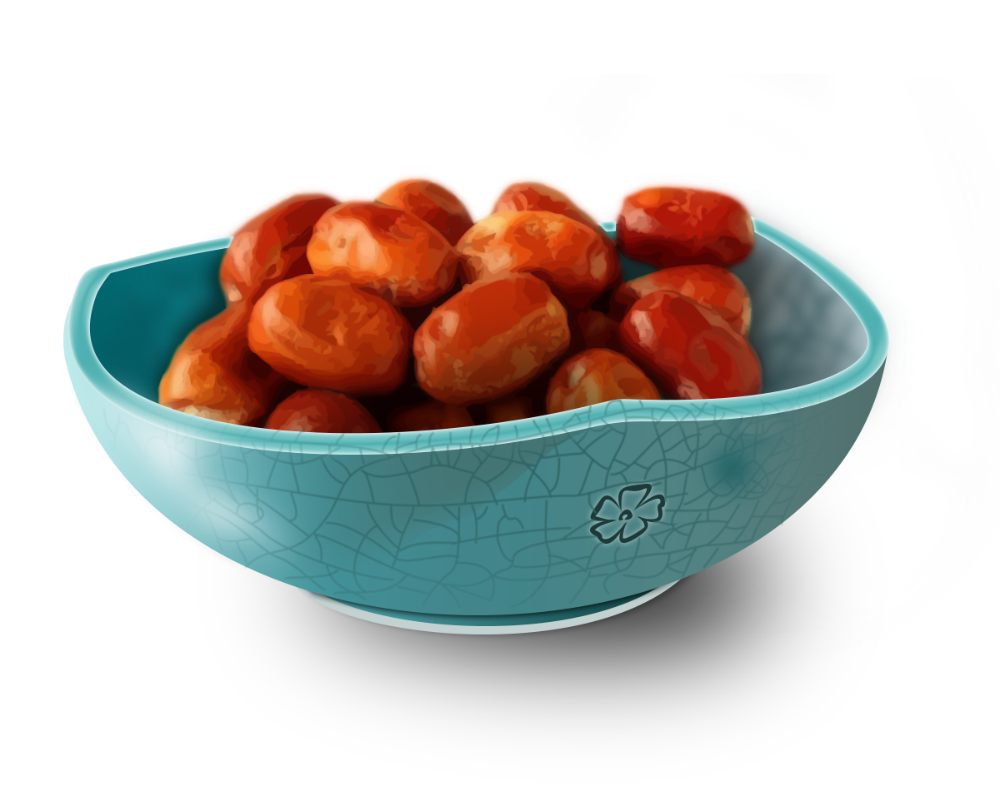
Senjed – dried fruit of the jujube tree – symbol of love.
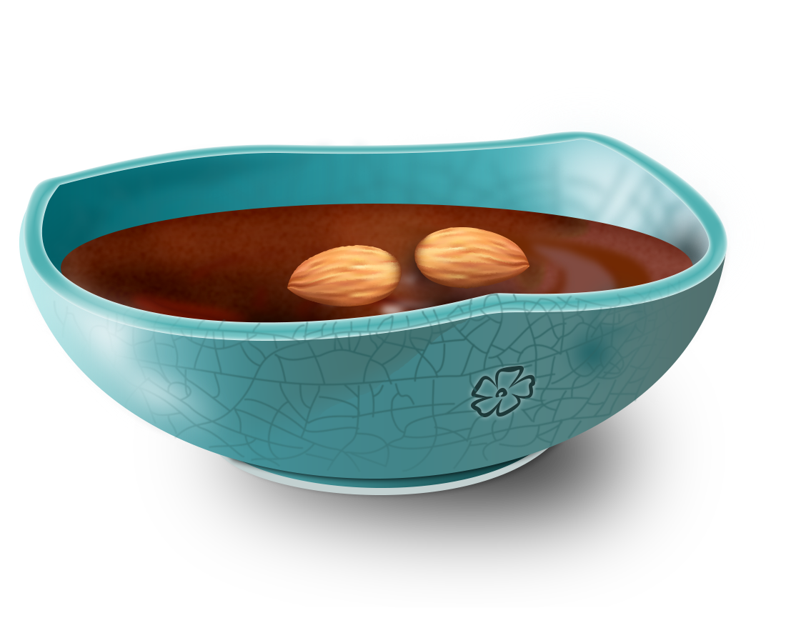
Samanou – very sweet cream made with wheat germ – symbol of power and bravado.
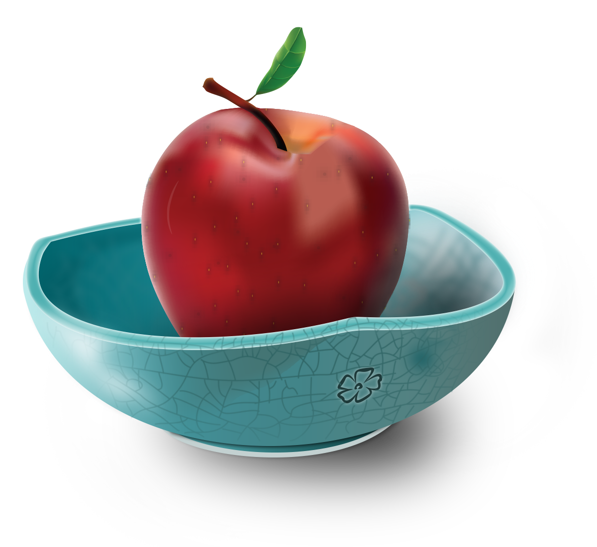
Sib – symbol apple beauty and good health.
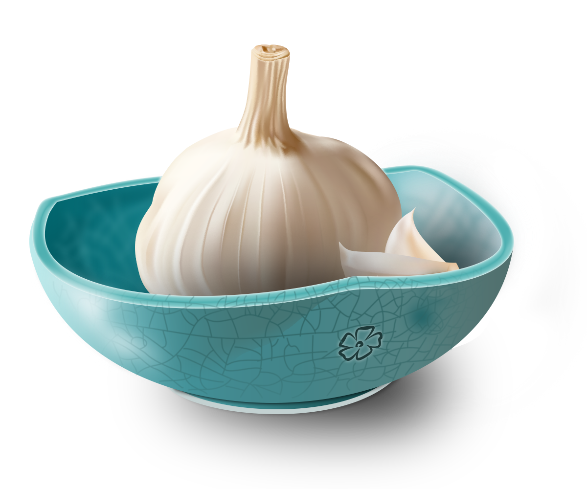
Sir – garlic – symbol of medicine.